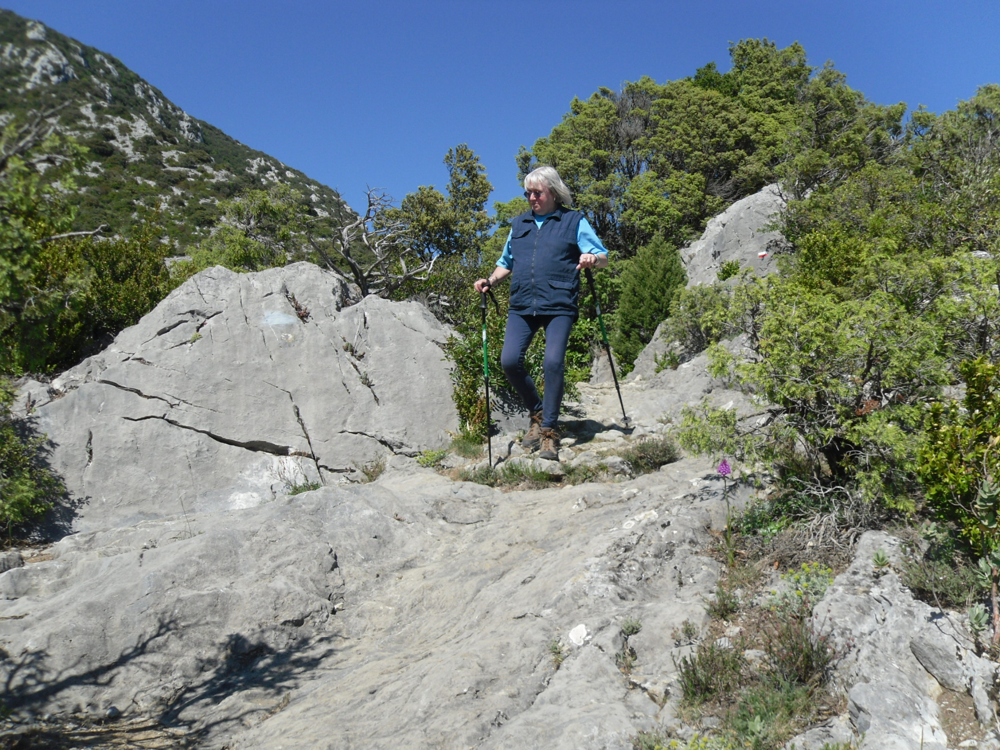

Nature & découverte
Randonnée
Parcourez les nombreux sentiers du territoire, entre forêts, gorges, sommets et villages. GR 36, Tour du Fenouillèdes ou sentier Cathare : il y en a pour tous les marcheurs.
Découvrir les sentiers →